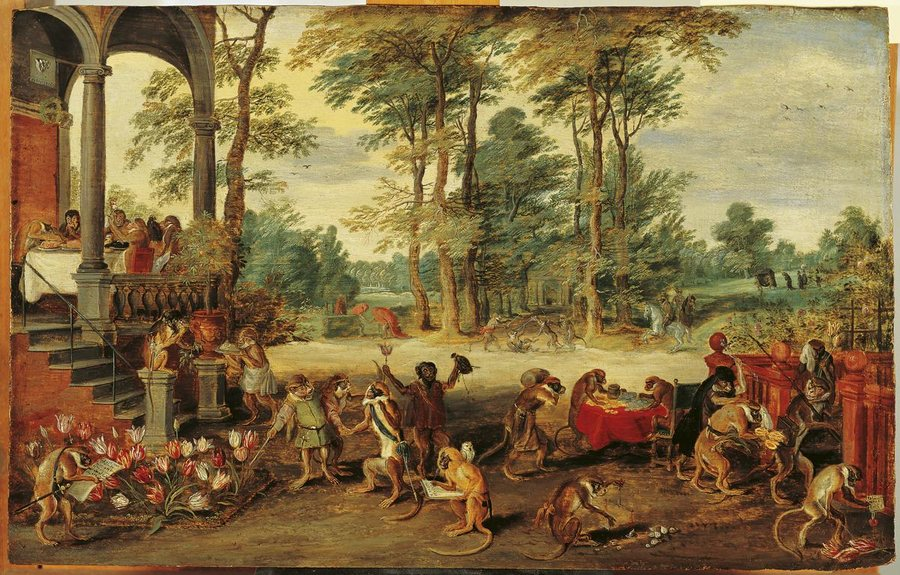
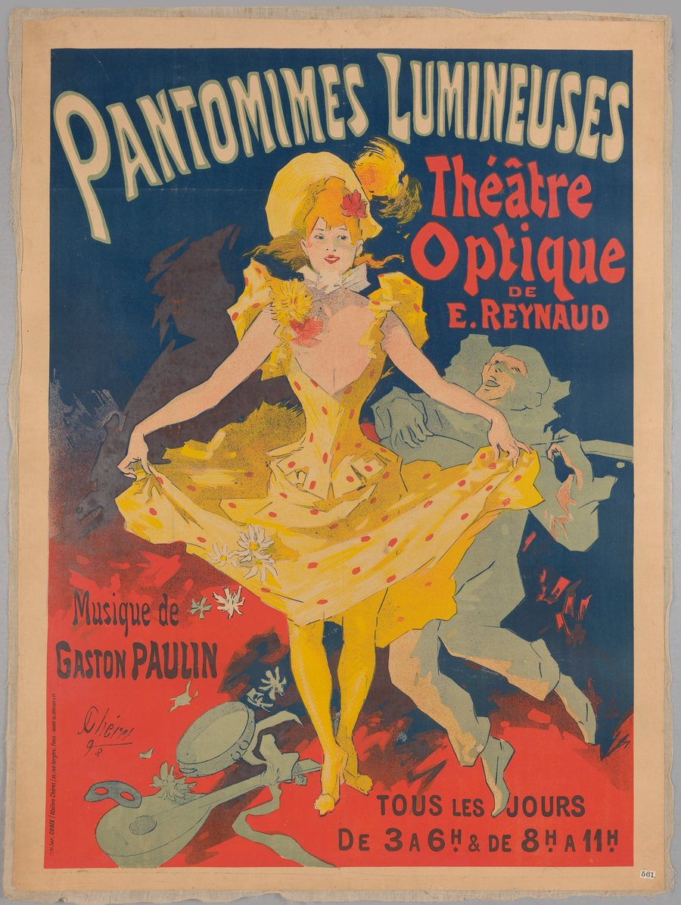
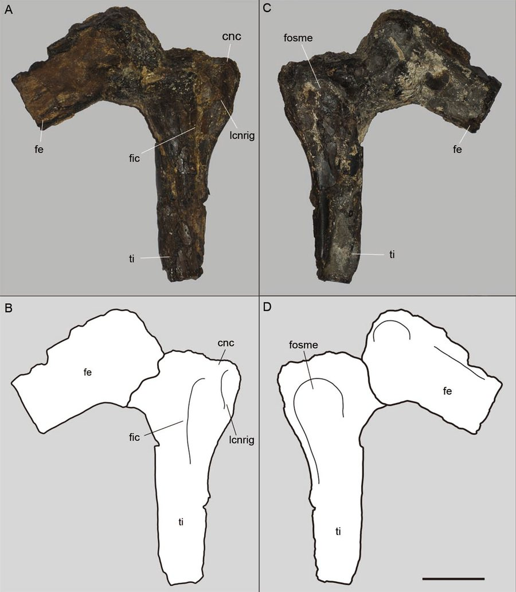

Москва · субботаВыпуск из Москвы и из-под землиЦена: бесплатно
TheSéance Times
газета для тех, кто разговаривает с прошлым
№ 011 · 7 ноября 2026Одиннадцатый выпускЧтение: 14 минут
Машина · главное
Триллион двести пятьдесят
OpenAI привлекла ещё 11 миллиардов долларов — при оценке в 1,25 триллиона. Это меньше, чем компания искала месяц назад. В тот же день Google забрал у Crusoe недостроенный дата-центр в Вайоминге и объявил, что вложит в него 17 миллиардов. Два числа, которые объясняют, почему токен не дешевеет так быстро, как обещали.
События — 6 ноября 2026 · Bloomberg, TechCrunch, отчётность Crusoe · 7 минут
Первое число пришло из Bloomberg в пятницу: OpenAI собрала 11 миллиардов долларов в новом раунде, оценка — 1,25 триллиона. Раунд ещё не закрыт; по данным источников агентства, он может дойти примерно до 20 миллиардов и завершиться в ближайшие недели. OpenAI на запрос TechCrunch не ответила.
Важна не сумма, а сравнение. В конце сентября тот же Bloomberg писал, что компания ищет 30 миллиардов — и при более высокой оценке в 1,4 триллиона. Сейчас на столе 11 миллиардов и 1,25 триллиона. Это не провал: деньги такого размера всё равно находят, а в марте компания вообще привлекла 122 миллиарда при оценке в 852 миллиарда. Но это редкий случай, когда оценку самой дорогой частной компании мира объявляют с понижением ожиданий, а не с повышением.
Второе число того же дня касается её главного конкурента. Anthropic на прошлой неделе подала в регулятор документ S-1 — заявку на публичное размещение. По данным Bloomberg, покупатели её акций оценивают компанию существенно ниже, чем месяц назад: часть потенциальных инвесторов называет 1,1 триллиона против 2 триллионов, которые ожидались ещё недавно. OpenAI, в свою очередь, на биржу не спешит: Сэм Альтман говорил, что отложит размещение, пока не сможет увереннее высказываться о безопасности своих моделей, — и добавлял, что «для мира, пожалуй, тоже плохо, если OpenAI слишком долго остаётся частной».

Первая оценка, которую пересмотрели: «Аллегория тюльпаномании», Ян Брейгель Младший, около 1640 года. Обезьяны в камзолах взвешивают монеты, пьют за удачную сделку, дерутся на шпагах из-за сорванных контрактов — а в правом нижнем углу одна из разорившихся мочится на брошенные луковицы. Слева торгуются, справа судят должников: весь цикл на одной картине. Общественное достояние, Wikimedia Commons.
Третье число — из другого цеха, и оно объясняет первые два. Crusoe, денверский застройщик дата-центров восьми лет от роду, оценённый в 30,9 миллиарда, в пятницу подтвердил: недостроенный проект в юго-восточном Вайоминге продан Google. Google — тот самый заказчик, которого Crusoe пытался получить для этой площадки и не получил. По сообщениям, компания забрала стройку после претензий к её стоимости и срокам при управлении Crusoe.
Проект анонсировали в прошлом году вместе с Tallgrass — инфраструктурной компанией за Blackstone, — и планировали довести до 10 гигаватт мощности. Цену покупки Google не раскрыл, но объявил, что вложит в кампус 17 миллиардов долларов. Для масштаба: это в три с половиной раза больше квартальной выручки Airbnb — и речь об одной площадке в одном штате.
Дальше — самое интересное для того, кто платит за токены. Crusoe не ушла из бизнеса: она строит Google ещё один дата-центр под Амарилло в Техасе. Её кампус в Абилине возводится фазами для Oracle и OpenAI, рядом — отдельные 900 мегаватт для Microsoft, первый корпус ждут к середине 2027 года. Клиенты — Meta, а Jane Street, по данным Bloomberg, подписала пятилетний облачный контракт на 13 миллиардов. Компания, которую основали Чейз Лохмиллер и Калли Кавнесс как майнинг криптовалюты на попутном газе, в сентябре привлекла 3,9 миллиарда и ввела в совет троих, включая Дж. Б. Страубела из Redwood Materials.
Оценка OpenAI1,25 трлн долларов; собрано 11 млрд из раунда, который может дойти до 20 млрд; в сентябре искали 30 млрд при оценке 1,4 трлн; в марте — 122 млрд при 852 млрд.
AnthropicПодала S-1 на прошлой неделе; покупатели акций называют оценку до 1,1 трлн против 2 трлн, ожидавшихся месяц назад (Bloomberg).
Сделка в ВайомингеCrusoe продала Google недостроенный проект; Google вложит в кампус 17 млрд; планируемая мощность — до 10 ГВт.
Кто такой CrusoeВосемь лет, Денвер, оценка 30,9 млрд; выросла из майнинга на попутном газе; раунд 3,9 млрд в сентябре.
ЗаказчикиOracle и OpenAI — Абилин, Microsoft — 900 МВт рядом, Meta, Jane Street — 13 млрд на пять лет; новый объект для Google — под Амарилло.
Чего нетЦены сделки в Вайоминге, выручки Crusoe и срока окупаемости 17 миллиардов. Это вложения, а не результат.
Что здесь факт, а что — обещание
Факт: сумма 11 миллиардов и оценка 1,25 триллиона — сообщение Bloomberg со ссылкой на источники; OpenAI его не подтверждала и не опровергала. Факт — сама сделка по Вайомингу: её подтвердила Crusoe, и Google объявил размер вложений. Факт — оценка Crusoe в 30,9 миллиарда и сентябрьский раунд.
Не факт: что 20 миллиардов будут собраны — раунд не закрыт. Не факт: что оценка Anthropic в 1,1 триллиона — это цена: так считают покупатели, а не рынок. Не факт: что Google забрал площадку из-за срывов сроков: это сообщения источников, а не заявление сторон. И главное: 17 миллиардов — это план расходов, а не потраченные деньги.
Оценка — это мнение инвесторов о будущем. Гигаватт — это трансформатор, который надо заказать сегодня и ждать его три года.
Редакционный вывод
Практический смысл для того, кто платит за API, а не за акции. Первое: цена токена определяется не качеством модели, а землёй, энергией и очередью на оборудование. Когда независимый застройщик не доводит площадку до конца и её забирает компания с балансом, мощность переезжает от многих к немногим — а с ней уходит и ценовая война. Второе: если провайдер обещает снижение цен «в следующем квартале», полезно посмотреть, кто у него за спиной стоит с траншеёй и подстанцией. Третье, самое отрезвляющее: дешевле всего та модель, которая уже лежит у вас на диске. Для рутины — пересказ, разметка, черновик перевода — локальная модель на своей видеокарте стоит ноль рублей за токен и не зависит от чужого раунда.
И вот что в этой паре сообщений по-настоящему красиво. В 1637 году луковица редкого тюльпана стоила как дом на канале, а через месяц не стоила ничего — потому что предметом торговли была не луковица, а ожидание. Тюльпаны при этом никуда не делись: их просто перестали считать деньгами. С дата-центрами фокус в том, что они не портятся, как луковицы: гигаватт, однажды подключённый, остаётся подключённым и приносит деньги даже после того, как оценку пересчитали. Поэтому на этот раз пузырь, если он лопнет, оставит после себя не гнилые цветы, а вполне работающие здания — и счёт за электричество, который кто-то должен оплатить.
Кино
Второй материал · 5 минут
Шесть пальцев
Сильвен Хоме, автор «Триплекса Бельвиль» и «Иллюзиониста», отвергает обвинения в том, что его шестиминутный фильм для Dior сделан генеративным ИИ. Довод обвинителей — персонаж с шестью пальцами. Довод режиссёра — семь месяцев работы и двадцать человек, из которых шесть аниматоров.
Событие — 7 ноября 2026 · Variety, эксклюзив · 5 минут

Когда рисунок был единственным способом: афиша Жюля Шере к сеансам «Светящихся пантомим» в Оптическом театре Эмиля Рейно, Париж, 1892 год. Рейно проецировал на экран рисованные ленты в Музее Гревен — с этого принято отсчитывать историю анимации. Каждый кадр был нарисован рукой, и никому не приходило в голову спрашивать, человек ли это делал. Общественное достояние, Wikimedia Commons.
Фильм называется «Christian Dior’s Night in Color», идёт шесть минут и снят к рождественскому сезону 2026 года. Продюсер — Атон Сумаш, работавший над «Маленьким принцем». Голоса собраны серьёзные: Роберт Паттинсон читает за кадром, Луи Гаррель играет самого Кристиана Диора, Камиль Коттен — Марлен Дитрих, Джош О’Коннор — говорящее кресло, Рианна — счастливую звезду Диора, Лакит Стэнфилд — голливудского режиссёра. Три пчелы говорят голосами Д’Юрсо, Нади Терешкевич и Греты Ли.
Скандал начался не с фильма, а с его позиционирования. Dior представил короткометражку как гимн ручному ремеслу, проведя параллель между рисованной анимацией Хоме и работой ателье дома. Зрители в ответ принялись разглядывать кадры и нашли то, что сегодня ищут первым делом: глюки. Самый убедительный — персонаж с шестью пальцами. Дальше версия собралась сама: режиссёра позвали две недели назад, всё сделала машина, рисунков нет.
Ответ пришёл в виде цифр, и это лучший способ отвечать на такое обвинение. Сумаш: «Фильм делали семь месяцев, и он целиком нарисован художниками». В работе участвовали около двадцати человек — шесть аниматоров, раскадровщики, дизайнеры, художники фонов, композиторы, монтажёры. Признаётся одно: для части промежуточных кадров использовали автоматическую интерполяцию — ту самую, что дорисовывает движение между ключевыми позами.
«Это способ автоматизировать повторяющуюся, механическую часть анимации, а не творческую работу», — говорит Хоме. Разница принципиальная, и в ней весь спор. Интерполяция — арифметика между двумя нарисованными кадрами; генеративная модель — рисунок, которого не было. Первое существует в анимации десятилетиями, второе — два года. Но на глаз, по одному стоп-кадру, отличить одно от другого невозможно, и именно поэтому обвинение выглядит убедительно: у него нет нуля доказательств, у него есть шесть пальцев.
Фильм«Christian Dior’s Night in Color», шесть минут, продюсер Атон Сумаш, режиссёр Сильвен Хоме.
ПроизводствоСемь месяцев, около 20 человек, шесть аниматоров; автоматическая интерполяция промежуточных кадров — по словам продюсера, небольшая часть процесса.
СюжетДитрих в Лос-Анджелесе готовится к съёмкам, режиссёр внезапно решает снимать в цвете; звонок в Париж, гонка за цветным платьем.
ОтсылкиДружба Диора с Дитрих, платье Junon 1949 года, переход кино из чёрно-белого в Technicolor.
Самое едкое — в биографии режиссёра. «Перед „Триплексом Бельвиль“ была эпоха „Истории игрушек“. Я помню, как Disney объявил, что традиционная рисованная анимация умерла и всё будет трёхмерным, — говорит Хоме. — Но я решил продолжать делать рисованные фильмы. Поэтому мне так странно, что сегодня на меня нападают. Я остался верен рисунку всю карьеру. При этом я собираюсь пользоваться инструментами, которые даёт технология».
Для газеты о разговорах с прошлым здесь важна не техника, а то, как быстро изменилась презумпция. Сто тридцать лет назад афиша Шере была доказательством: если нарисовано — значит, человеком, других вариантов не существовало. Теперь наоборот: ручная работа должна предъявить доказательства, а любой сбой в рисунке читается как подпись машины. Хоме защищается счётом за семь месяцев и списком из двадцати имён — то есть тем же способом, каким в XVII веке доказывали, что картину писал мастер, а не подмастерье: свидетелями и сроками. Прогресс оставил художнику ровно те доказательства, которые были у цеховых живописцев.
Инструментарий
ИИ и правила · 6 ноября
Отступила, не дойдя до финиша
Ars Technica · 6 ноября 2026
Meta бессрочно отложила обновление коммерческих условий, которое обязало бы владельцев страниц разрешать обучение ИИ на внешних сайтах, куда ведут ссылки с Facebook. Формулировка компании для Reuters: «Мы приостанавливаем изменения, пока продолжаем консультации и стараемся сделать всё правильно. Действующие условия пока сохраняются».
Что именно предлагалось — важно для любого, у кого есть сайт. Чтобы сохранить деловую страницу, владелец должен был согласиться на обход связанных внешних сайтов для обучения моделей и, по сообщениям, создать тестовые доступы, чтобы боты Meta могли проходить платный доступ. Юристы предупреждали, что размытая формулировка позволит игнорировать директивы robots.txt. Условия должны были вступить 30 октября, потом 20 ноября; суды Бразилии и Норвегии вынесли предварительные запреты, британское управление по конкуренции открыло формальное расследование. В США сенаторы от обеих партий написали Цукербергу с требованием условия отозвать.
СтатусОбновление приостановлено бессрочно; действующие условия сохраняются.
Что требовалосьРазрешение на обучение ИИ по внешним сайтам, связанным со страницей, и тестовые доступы для ботов.
Кто вмешалсяСуды Бразилии и Норвегии, управление по конкуренции Великобритании, сенаторы США.
Позиция MetaКомпания настаивает, что не использовала бы условия для обхода robots.txt и что практика обхода не изменилась.
Практический вывод для автора, у которого есть и страница на площадке, и свой сайт. Первое: robots.txt остаётся единственным техническим сигналом, который компания публично признаёт, — значит, его стоит прописать явно и проверить, что он отдаётся, а не генерируется скриптом на лету. Второе: отзыв условий — результат давления судов и регуляторов, а не смена политики; следующая редакция придёт с другими словами. Третье, самое полезное: если у текста есть машиночитаемые данные — автор, год, издатель, — бот получает факт, а не догадку, и вероятность, что вас перескажут с ошибкой в имени, падает. Это единственная защита, которая работает без юристов.
Небо
Космос · 4 ноября
Двадцать два года вместо двух
NASA · 4 ноября 2026
Обсерватория имени Нила Герелса «Свифт» вернулась на Землю. Аппарат вошёл в атмосферу в среду в 7:39 по восточному времени над Северной Суматрой в Индонезии — координаты около 3,4 градуса северной широты и 98,6 градуса восточной долготы; вход подтвердили Космические силы США. Большая часть должна была сгореть, но в NASA признают: отдельные элементы могли пережить нагрев.
«Свифт» запустили в 2004 году, и он был рассчитан на два года работы. Прожил почти двадцать два — в десять с лишним раз дольше плана. На борту стояли три телескопа, работавших в разных диапазонах: гамма-, рентгеновском, ультрафиолетовом и оптическом. Главная задача — гамма-всплески, самые мощные вспышки во Вселенной, которые случаются при коллапсе массивных звёзд или слиянии нейтронных звёзд.
Машина, которая успевала первой: модель обсерватории «Свифт». Её ценность была не в размере зеркал, а в скорости: заметив вспышку, аппарат за секунды разворачивался на источник и рассылал координаты обсерваториям по всему миру — чтобы те успели посмотреть, пока явление не погасло. Изображение: NASA E/PO, Sonoma State University, Aurore Simonnet; общественное достояние.
КогдаВход в атмосферу — среда, 4 ноября 2026, 7:39 EST; район — Северная Суматра.
Сколько летЗапуск — 2004 год; расчётный срок — два года; фактически — почти 22.
Чем занималсяГамма-всплески, чёрные дыры, взрывающиеся звёзды; три телескопа в разных диапазонах.
Что осталосьЧасть обломков могла не сгореть; точное место падения не сообщается.
Хорошая деталь для тех, кто считает космос дорогим: самый результативный инструмент десятилетия был построен на два года и отработал двадцать два. Не потому, что в NASA умеют предсказывать будущее, а потому, что запас прочности закладывают с избытком — и потому, что инженеры на земле двадцать лет находили способы обходить отказы. Экономика космоса держится не на точных расчётах, а на этом запасе.
Наука
Палеонтология · 6 ноября
Кровь возрастом 115 миллионов лет
Curtin University · 6 ноября 2026
В костях динозавра, жившего 115 миллионов лет назад, нашли химически подтверждённые следы крови. Работа опубликована в Proceedings of the National Academy of Sciences; международную группу возглавила Клити Грайс, профессор Университета Кёртина и директор центра органической и изотопной геохимии в Перте.
Речь о Aratasaurus museunacionali — хищном тероподе, найденном на северо-востоке Бразилии. В трубчатых костях конечностей исследователи увидели множество минерализованных эритроцитов внутри сосудистых каналов — тех самых узких проходов, где когда-то шли кровеносные сосуды. Химический анализ показал сохранённые молекулы гема, из которых состоит гемоглобин, и аминокислоты, связанные с коллагеном.
Раньше в древних окаменелостях находили структуры, похожие на клетки крови, но доказать, что внутри именно эти молекулы, не удавалось. Здесь впервые получено прямое химическое подтверждение. «Обнаружить интактные молекулы, производные гема, в эритроцитах возрастом 115 миллионов лет — это поразительно, — говорит Грайс. — Это не только расширяет известную летопись крови, но и даёт прямое молекулярное окно в физиологию давно вымерших животных».

Та самая кость: голотип Aratasaurus museunacionali (MPSC R 2089) — большеберцовая кость, фотографии и прорисовки с двух сторон; масштабная линейка — 50 миллиметров. В сосудистых каналах таких костей и сохранились минерализованные эритроциты. Изображение: Sayão, Saraiva, Brum, Bantim, Andrade, Cheng, Lima, Silva, Kellner; CC BY 4.0, Wikimedia Commons.
КтоAratasaurus museunacionali — теропод из северо-восточной Бразилии, возраст около 115 млн лет.
Что нашлиМинерализованные эритроциты в сосудистых каналах, молекулы гема, аминокислоты коллагена.
Почему сохранилосьМинерал гаусманнит стабилизировал клетки; захоронение — быстрое, в осадке, при малом кислороде и активных микробах.
Кто участвовалУниверситет Кёртина, JAMSTEC (Япония), Бразильский национальный музей, Regional University of Cariri, Университет Джонса Хопкинса.
Практическое следствие скромнее заголовков, и его стоит проговорить. Из этого не следует, что из костей можно выделить ДНК и клонировать ящера: белки и гем — не геном, и 115 миллионов лет для нуклеиновых кислот срок неподъёмный. Следует другое: палеонтология получила метод искать молекулярные следы там, где раньше видели только камень. А заодно — аргумент для тех, кто ищет следы жизни вне Земли: если хрупкие биомолекулы выживают в осадочной породе сто миллионов лет, пределы сохранности стоит пересчитать.
Тело
Медицина · 5 ноября
Рапамицин на опережение
University of Missouri · 5 ноября 2026
Лекарство, которым подавляют отторжение пересаженных органов, может оказаться полезным задолго до того, как появятся симптомы болезни Альцгеймера. Исследователи Университета Миссури под руководством Ай-Лин Линь давали рапамицин здоровым взрослым 45–65 лет, часть из которых была носителями варианта гена APOE4 — самого известного генетического фактора риска.
Логика исследования такая. У носителей APOE4 кровоток в отдельных областях мозга падает за годы до первых проблем с памятью. Это уже не симптом, а предвестник — и, возможно, точка, где вмешательство ещё имеет смысл. В предыдущих опытах на мышах с тем же вариантом гена рапамицин замедлял старение мозга и улучшал кровоснабжение. Теперь то же проверили на людях: низкая доза, четыре недели, все участники получали препарат.
Результат разделился ровно по генетике. У носителей APOE4 приток крови к мозгу улучшился; у участников без этого варианта — нет. Разница между мужчинами и женщинами оказалась ещё заметнее: наибольший эффект — у женщин с APOE4. «Это значимо, учитывая, что почти две трети людей с болезнью Альцгеймера — женщины», — говорит Линь.
ПрепаратРапамицин; применяется против отторжения органов, изучается как средство против старения.
Кто участвовалЗдоровые взрослые 45–65 лет, носители APOE4 и без него; низкая доза, четыре недели.
Что улучшилосьКровоток в мозге — только у носителей APOE4; сильнее всего у женщин с этим вариантом.
ПубликацияJournal of Cerebral Blood Flow & Metabolism; пилотное однорукавное исследование.
Чего не доказаноЧто препарат предотвращает или откладывает болезнь: проверяли кровоток, а не память.
Здесь важна честность формулировки, потому что новость легко пересказать как «лекарство от Альцгеймера найдено». Это пилотное исследование: одна группа, без плацебо, небольшая выборка, четыре недели и единственный измеренный эффект — кровоснабжение. Улучшение кровотока — разумная цель, но не доказанное предотвращение деменции; между одним и другим лежат годы наблюдений и контрольные группы. Ценность работы в другом: она показывает, кого именно имеет смысл проверять дальше. Не «всех после шестидесяти», а носителей APOE4 — и в первую очередь женщин.
Книги
Ремесло · 6 ноября
Скучно и хочется
Literary Hub · 6 ноября 2026
В рассылке Craft of Writing Literary Hub вышел текст Адама Питерсона — спор о том, почему в научной фантастике желание почти всегда оставляют на Земле. Начинается он с моряков: те месяцами смотрели на морских млекопитающих и думали единственную мысль, доступную человеку в изоляции. Колумб в дневнике уверяет, что видел сирен, — почти наверняка это были дюгонь или ламантин весом в полтонны. Истории о соблазнительных существах, уводящих моряка на дно, старше самого мореплавания.
Довод автора простой: если изолировать людей и отправить их в пустое пространство, они начнут видеть то, чего им не хватает. То же самое, по его мнению, должно происходить на звездолёте — но не происходит. В книгах, где есть варп-двигатели и бластеры, желание часто считается слишком примитивной технологией для будущего: от него якобы нужно отказаться, чтобы достичь высшего предназначения. «Зачем им друг друга касаться, когда тут столько математики?»
Там, где фантастика всё-таки говорит об этом, выходит нечто странное: не близость, а «секс будущего» — со сменой пола у Иэна Бэнкса, гибридами и монстрами у Дэна Симмонса. Автор не спорит с этими книгами, он спорит с самим подходом. Фантастика — жанр объяснения: сначала покажи чудо, потом выдай инструкцию и условия. Желание в такую схему не влезает, потому что объяснению не поддаётся. Отсюда формула, которую стоит записать: научная фантастика — это быстрые истории, рассказанные медленно, а романтика — медленные истории, рассказанные быстро.
АвторАдам Питерсон, эссе «Science Friction» в рассылке Craft of Writing, Literary Hub, 6 ноября 2026.
ТезисВ фантастике желание часто считают слишком примитивным для будущего — и персонажи становятся чужими.
ПримерыИэн Бэнкс («Вспомни о Флебе»), Дэн Симмонс («Гиперион»), сирены в дневнике Колумба.
Для того, кто пишет историческую прозу или тёмное фэнтези, польза здесь не в теме, а в проверке. Читатель верит в мир не тогда, когда ему объяснили устройство телепорта, а когда герой чего-то хочет так, что это мешает ему жить. Проверить свою главу можно одним вопросом: есть ли у персонажа желание, которое нельзя свести к сюжету? Если всё, чего он хочет, — дойти до следующей точки, он не человек, а функция. Питерсон формулирует жёстче: герой, у которого нет тела, — самый инопланетный персонаж в собственной книге.